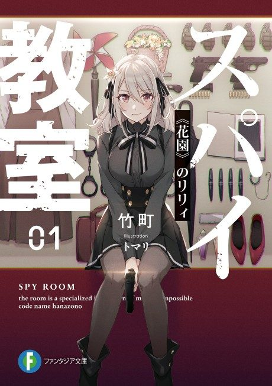

Spy Classroom
スパイ教室
After the anime, read the light novel from Volume 6.
6.1AniList score
—Animeter, no votes yet
24episodes, 2 seasons
Rate it or report where you stopped
Anime finished. Where does the story go next?
Start at Volume6
Season 1 covers up to volume 3 and season 2 ends at the end of volume 5, so start at volume 6.
135ongoing
Season 1Season 2Start reading here